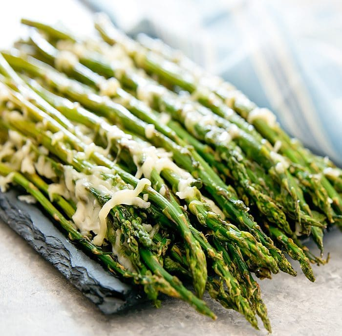

Roasted Asparagus with Parmesan

Fresh asparagus spears are simply seasoned with garlic, topped with shredded Parmesan cheese, and baked until tender and sweet in this easy spring side dish.
Arrange the asparagus spears in a single layer in an oiled casserole dish, then spray with olive oil. Evenly sprinkle the asparagus with Parmesan, salt, and garlic powder. Roast in a preheated oven until the thickest part of the stem is easily pierced with a fork.
This roasted asparagus with Parmesan makes a perfect companion for all sorts of entrees, from fish to steak (and everything in between).
Ingredients:
- olive oil cooking spray
- 1 pound fresh asparagus, tough ends trimmed
- ¼ cup shredded Parmesan cheese
- 1 teaspoon sea salt
- ¼ teaspoon garlic powder, or to taste
Steps:
- Preheat oven to 400 degrees F (200 degrees C).
- Spray the inside of a 9x13 casserole dish with olive oil cooking spray.
- Place asparagus in the dish and lightly spray spears with cooking spray.
- Sprinkle asparagus with Parmesan cheese, sea salt, and garlic powder.
- Roast in preheated oven until fork easily punctures thickest part of stem, about 12 minutes.
Back to index